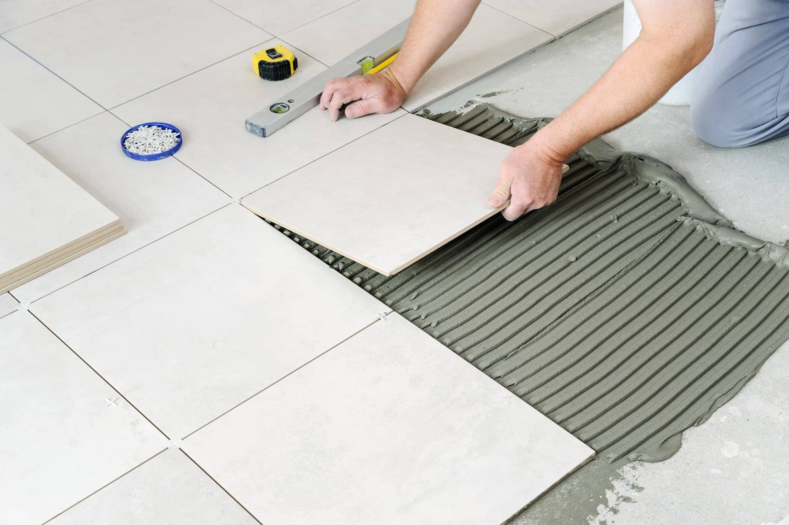
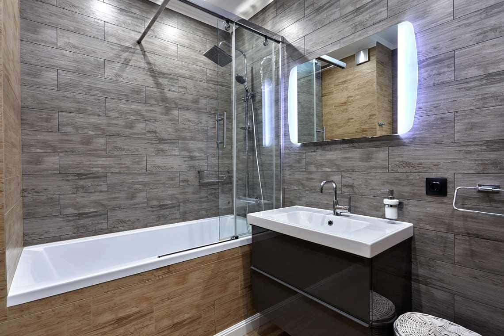

Laying tile with your own hands
How to glue tiles on your own?
Let's be clear: it is not our goal to describe, for example, how to lay wall tiles - it is too big a topic. how to lay wall tiles, for example, is too big a topic. We will We will reveal the key points so that you realize the scale of the task.
How to prepare for tile installation?
Whether installing ceramic tile in the bathroom, kitchen. or, say, on a porch, it's important to start with the basics:
- Prepare a design project. You should clearly know how the cladding, made by your own hands, will look like and what pattern you want to make.
- Purchase finishing materials. Tiles need a reserve of at least 10% of the area to be covered - taking into account cutting and possible spoilage.
- Stock up on the important little things. I'm not talking about tools (more on that below), but gloves, kneepads and cleaning supplies.
What tools are needed ?
You can't talk about how to lay tiles yourself on the wall and floor - and forget about what to do it with. You will need:
- Consumables tile adhesive, grout for joints, silicone sealant, primer, waterproofing, tile levelling taps, etc.
- Accessories for glue container for mortar and construction mixer (can be replaced by a drill or a perforator with a special shape nozzle).
- Trowels flat, toothed (the more tiles, the more teeth), for joints small rubber, plus a trowel.
- Measuring tools ruler, tape measure and angle, construction level and plumb line, and pencil.
- Tile cutters, tile cutter and angle grinder, core for curvilinear cutting, file for grinding edges, drill with drills and crowns for holes.
- A rubber mallet or wooden mallet.
How to lay tiles?
Although there are nuances in the installation of floor, facade, clinker and any other ceramics, the work scenario is similar. Therefore, whether you want to know how to put tiles in the bathroom with your own hands or on the kitchen apron, focus on these stages:
- Surface preparation.. Before laying the facing material, the base is cleaned, levelled and primed. Brick and concrete walls are still plastered, putty, and plasterboard - strengthen the mesh of glass fibre. And a completely separate conversation, how to make a floor screed for tiles with your own hands, its waterproofing, etc.
- Kneading the mortar. The glue must be properly created: the dry mixture is combined with water in the proportion given in the instructions and kneaded with a mixer for 5-10 minutes to a homogeneous, not too liquid or thick consistency. It is not necessary to prepare the whole mixture at once - it will harden quickly. It is better to mix the mortar in portions as you go along.
- Surface marking. There are many ways of "drawing", since it is correct to lay tiles on the floor diagonally, for example, you need to differently than in a straight line. But the principles are the same. It is necessary to minimise the cut tiles, and its edges "hide" under furniture, platbands of interior doors, behind the shower cubicle, in the corners, etc. - so that it does not catch the eye
- Installing tiles. Apply glue trowel on a small area of the walls or floor, put a tile on the markings, pressing, tapping with a mallet and check the level, repeat with the neighbouring, put between them crosses - and so the whole row. But this is in general, and with the first row, trimmed tiles, corners, shaped ceramics, panels, etc., there are many differences...
- Tile trimming.. Cutting off the elements is quite simple: they made a cut line, put in motion tile cutter or "Bulgarianrku". At the same time, it is necessary to measure and glue such ceramics only after the whole row is laid. As for cut-outs for sockets, pipes and wires, it is better to make them using drills with drills and bits of different diameters.
- Grouting seams.When the tiles are laid, leave it for a couple of days until the glue has not hardened. After removing the crosses, painter's tape and remnants of mortar in the joints. Then prepare grout according to the instructions (on the cement base on one rule, on the epoxy - on the other) and soft trowel fill the joints, removing excess. And when it hardens, wipe everything with a dry sponge.

As you can see, we didn't touch on where to start laying tiles or how to lay mosaic tiles - there are manuals devoted to that! But you've probably got the gist of it. Everything matters: from the type of ceramic to the angle of the trowel....